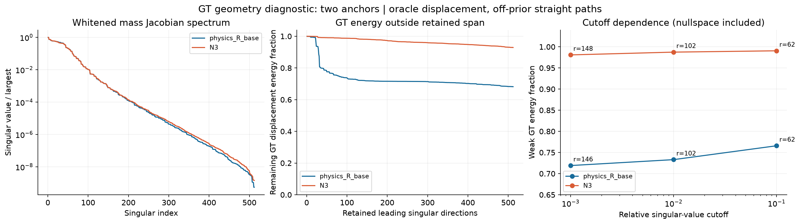
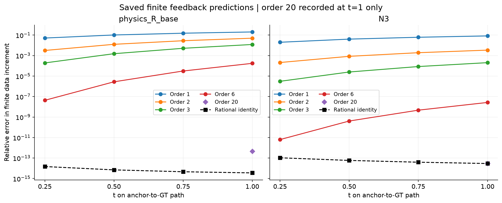
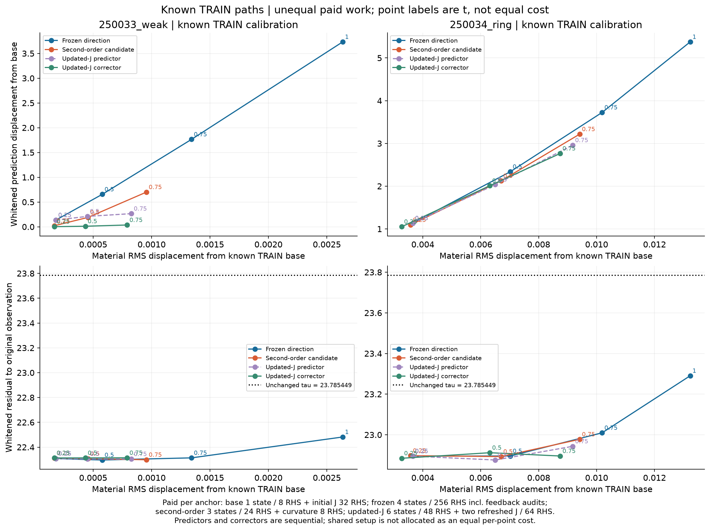
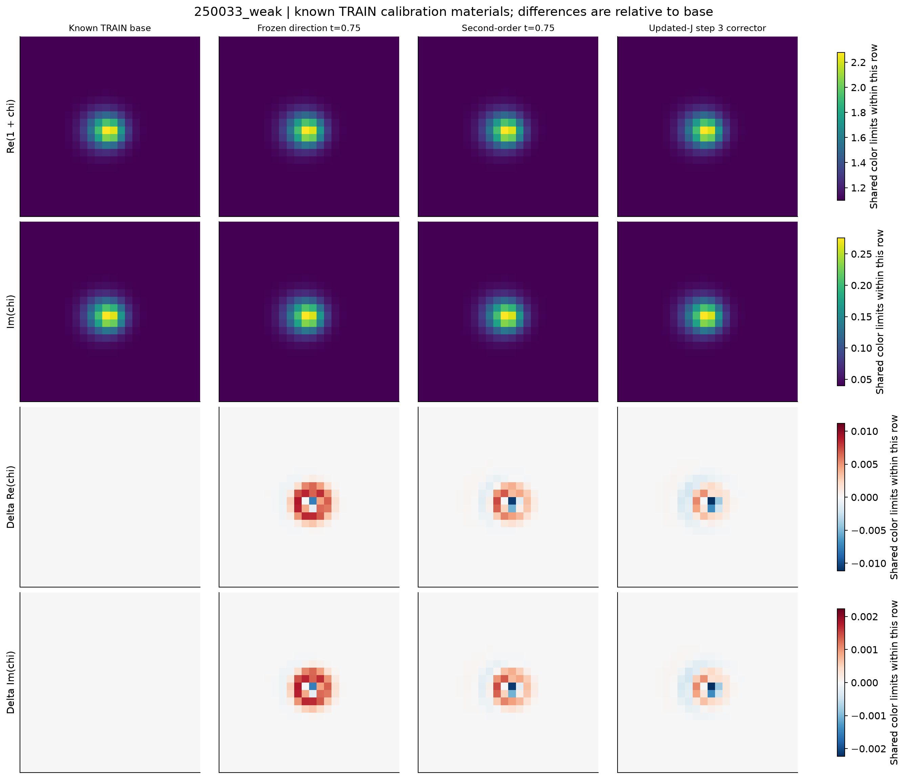
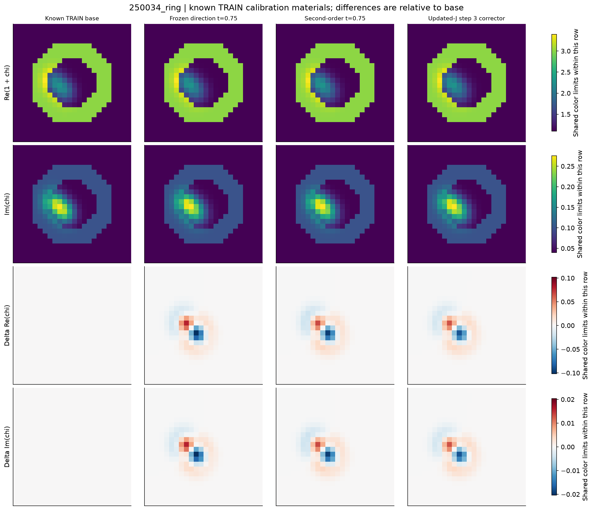
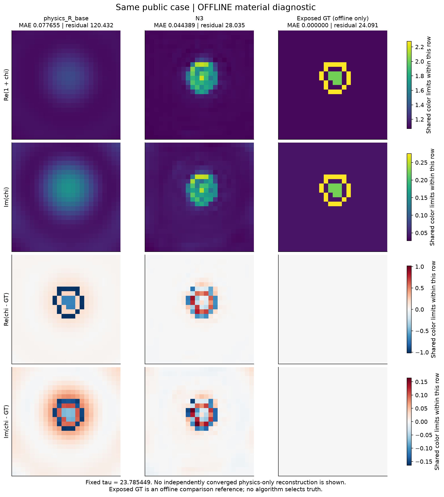
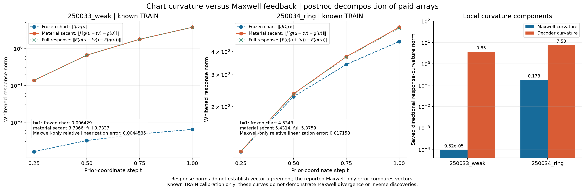

仅重绘已支付的保存结果：45 states / 1880 RHS；本次绘图新增物理成本为零。GT 路径仅作几何诊断；已知 TRAIN 路径仅作校准，不是逆问题发现、解纤维证明、后验样本或多模态发现。原始噪声阈值 tau=23.785449 保持不变。所有图标题为英文，图片和 PDF 可独立下载。
GT 仅用于几何诊断；弱能量包含矩形零空间，不代表已找到等数据解。
PDF · PNG
两条使用 GT 的离先验路径；高阶与有理表达的误差核对，不是逆问题发现。
PDF · PNG
已知 TRAIN 校准，不是逆问题发现或多模态样本；原始阈值不变，路径成本不相等。
PDF · PNG
已知 TRAIN 材料与相对基准差值；每行统一色标，不将微小变化放大成新模式。
PDF · PNG
已知 TRAIN 材料与相对基准差值；每行统一色标，不将微小变化放大成新模式。
PDF · PNG
同一公开案例的离线材料对照；GT 已暴露，仅用于事后比较，不是算法选出的结果；没有独立收敛的纯物理重建。
PDF · PNG
已支付数组的事后拆分：比较先验切线、实际材料增量与完整响应；区分 decoder 曲率与 Maxwell 曲率，不声称 Maxwell 发散。
PDF · PNG
下面逐端点统计账本中的直接归属；共享初始 J、刷新 J、曲率项与路径导数另计，不是从零生成端点的独立算法成本。完整实验总计仍为 45 states / 1880 RHS。预测与校正按顺序执行，不能作为等成本对照。
| Endpoint | States | Direct RHS |
|---|---|---|
| physics_R_base_base | 1 | 8 |
| physics_R_base_oracle_t0.25 | 1 | 64 |
| physics_R_base_oracle_t0.5 | 1 | 64 |
| physics_R_base_oracle_t0.75 | 1 | 64 |
| DEV_GT | 1 | 8 |
| physics_R_base_oracle_mid0.125 | 1 | 8 |
| physics_R_base_oracle_mid0.375 | 1 | 8 |
| physics_R_base_oracle_mid0.625 | 1 | 8 |
| physics_R_base_oracle_mid0.875 | 1 | 8 |
| N3_base | 1 | 8 |
| N3_oracle_t0.25 | 1 | 64 |
| N3_oracle_t0.5 | 1 | 64 |
| N3_oracle_t0.75 | 1 | 64 |
| N3_oracle_mid0.125 | 1 | 8 |
| N3_oracle_mid0.375 | 1 | 8 |
| N3_oracle_mid0.625 | 1 | 8 |
| N3_oracle_mid0.875 | 1 | 8 |
| 250033_weak_base | 1 | 8 |
| 250033_weak_weak_t0.25 | 1 | 64 |
| 250033_weak_weak_t0.5 | 1 | 64 |
| 250033_weak_weak_t0.75 | 1 | 64 |
| 250033_weak_weak_t1 | 1 | 64 |
| 250033_weak_curvature_t0.25 | 1 | 8 |
| 250033_weak_curvature_t0.5 | 1 | 8 |
| 250033_weak_curvature_t0.75 | 1 | 8 |
| 250033_weak_pc_1_predict | 1 | 8 |
| 250033_weak_pc_1_correct | 1 | 8 |
| 250033_weak_pc_2_predict | 1 | 8 |
| 250033_weak_pc_2_correct | 1 | 8 |
| 250033_weak_pc_3_predict | 1 | 8 |
| 250033_weak_pc_3_correct | 1 | 8 |
| 250034_ring_base | 1 | 8 |
| 250034_ring_weak_t0.25 | 1 | 64 |
| 250034_ring_weak_t0.5 | 1 | 64 |
| 250034_ring_weak_t0.75 | 1 | 64 |
| 250034_ring_weak_t1 | 1 | 64 |
| 250034_ring_curvature_t0.25 | 1 | 8 |
| 250034_ring_curvature_t0.5 | 1 | 8 |
| 250034_ring_curvature_t0.75 | 1 | 8 |
| 250034_ring_pc_1_predict | 1 | 8 |
| 250034_ring_pc_1_correct | 1 | 8 |
| 250034_ring_pc_2_predict | 1 | 8 |
| 250034_ring_pc_2_correct | 1 | 8 |
| 250034_ring_pc_3_predict | 1 | 8 |
| 250034_ring_pc_3_correct | 1 | 8 |